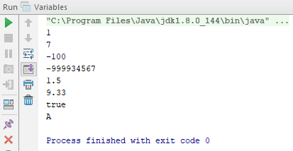

Variables
by Jake Barnes
Posted on November 2, 2017 at 12:59 PM
This article is going to show you something called variables.
In Java, like other programming languages, we use data types, variables and arrays to represent various data.
In this tutorial we shall look at something called the primitive types. Primitive Types are commonly refered to as simple types and can be put into four groups:
- Integers, which are simply whole numbers, such as 1, 5, 11, 12345, -200 etc. They can be positive or negative. The four types of integer are byte, short, int, and long.
- Floating-point numbers, which represent numbers with fractional precision, i.e. decimals. The two types of floating point numbers are float and double.
- Characters, which are used to represent numbers, letters or symbols, like ‘A’, ‘j’, '6' or ‘$’. They are defined using char.
- Boolean, which is a special type for representing true/false values, defined using boolean.
Just a quick note about the primitive types. Each one has a pro and con, usually being the length of bits used to represent the value. The more bits used, the more precise/larger the number can be, while using more memory.
Integers
| Name | Width (bits) | Range |
|---|---|---|
| long | 64 | -9,223,372,036,845,775,808 to 9,223,372,036,854,775,807 |
| int | 32 | -2,147,483,648 to 2,147,483,647 |
| short | 16 | -32,768 to 32,767 |
| byte | 8 | -128 to 127 |
Floating-Point Types
| Name | Width (bits) | Range (Approximate) |
|---|---|---|
| double | 64 | 4.9e-324 to 1.8e+308 |
| float | 32 | 1.4e-045 tp 3.4e+038 |
Now, lets write a basic program that outputs all of the different primitive types we've discussed.
public static void main(String args[]) {
int intExample = 1;
byte byteExample = 7;
short shortExample = -100;
long longExample = -999934567
double dblExample = 1.5;
float fltExample = 2.3f;
boolean boolExample = true;
Char charExample = ‘A’;
System.out.println(intExample);
System.out.println(byteExample);
System.out.println(shortExample);
System.out.println(longExample);
System.out.println(dblExample);
System.out.println(fltExample);
System.out.println(boolExample);
System.out.println(charExample);
}
We have created some variables of different types and then printed them to the console using the method we saw before - System.out.println(). Also note the 'f' after the number in the float example, which is used to denote a floating point
number. If we run this program, on the terminal output we will see:

So, what have we done in these 16 lines of code?
In the first half, we have created variables with different types and names, and assigned them values.
In the second half, we have outputted the variables using the println() method.
Recap
So to conclude, variables are used in programming to represent different types of data. It is important that you learn about all of the types, and also that you gain an understanding of where and when to use them.